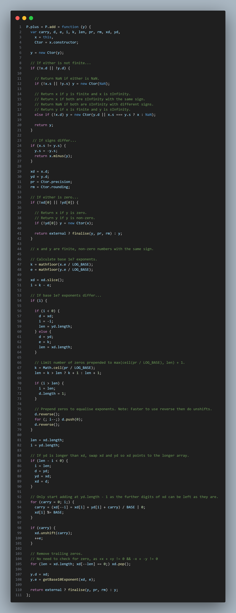

Decimal.js 作用
JavaScript 中的数字按照 IEEE 754 的标准，使用 64 位双精度浮点型来表示。其中符号位 S，指数位 E，尾数位 M 分别占了 1，11，52 位，并且在 ES5 规范 中指出了指数位 E 的取值范围是 [-1074, 971]。
还有那些经典的面试题 02+0.1 == 0.3
那么，Decimal.js 就是帮助我们解决 js 中的精度失准的问题
Decimal.js 安装
Browser:
<script src='path/to/decimal.js'></script>
<script type="module">
import Decimal from './path/to/decimal.mjs';
...
</script>
Node.js:
npm install decimal.js
const Decimal = require('decimal.js');
import Decimal from 'decimal.js';
import {Decimal} from 'decimal.js';
Decimal.js 实现原理
把浮点数转化为字符串，模拟实际运算的过程。 代码传送门
// 转string
P.toString = function () {
var x = this,
Ctor = x.constructor,
str = finiteToString(x, x.e <= Ctor.toExpNeg || x.e >= Ctor.toExpPos);
return x.isNeg() && !x.isZero() ? '-' + str : str;
};
//finiteToString 具体实现
function finiteToString(x, isExp, sd) {
if (!x.isFinite()) return nonFiniteToString(x);
var k,
e = x.e,
str = digitsToString(x.d),
len = str.length;
if (isExp) {
if (sd && (k = sd - len) > 0) {
str = str.charAt(0) + '.' + str.slice(1) + getZeroString(k);
} else if (len > 1) {
str = str.charAt(0) + '.' + str.slice(1);
}
str = str + (x.e < 0 ? 'e' : 'e+') + x.e;
} else if (e < 0) {
str = '0.' + getZeroString(-e - 1) + str;
if (sd && (k = sd - len) > 0) str += getZeroString(k);
} else if (e >= len) {
str += getZeroString(e + 1 - len);
if (sd && (k = sd - e - 1) > 0) str = str + '.' + getZeroString(k);
} else {
if ((k = e + 1) < len) str = str.slice(0, k) + '.' + str.slice(k);
if (sd && (k = sd - len) > 0) {
if (e + 1 === len) str += '.';
str += getZeroString(k);
}
}
return str;
}
构造函数
Decimal = clone(DEFAULTS);
function clone(obj) {
var i, p, ps;
/*
* The Decimal constructor and exported function.
* Return a new Decimal instance.
*
* v {number|string|Decimal} A numeric value.
*
*/
function Decimal(v) {
var e, i, t,
x = this;
// Decimal called without new.
if (!(x instanceof Decimal)) return new Decimal(v);
// Retain a reference to this Decimal constructor, and shadow Decimal.prototype.constructor
// which points to Object.
x.constructor = Decimal;
// Duplicate.
if (isDecimalInstance(v)) {
x.s = v.s;
if (external) {
if (!v.d || v.e > Decimal.maxE) {
// Infinity.
x.e = NaN;
x.d = null;
} else if (v.e < Decimal.minE) {
// Zero.
x.e = 0;
x.d = [0];
} else {
x.e = v.e;
x.d = v.d.slice();
}
} else {
x.e = v.e;
x.d = v.d ? v.d.slice() : v.d;
}
return;
}
t = typeof v;
if (t === 'number') { // 对数字类型判断
if (v === 0) {
x.s = 1 / v < 0 ? -1 : 1;
x.e = 0;
x.d = [0];
return;
}
if (v < 0) {
v = -v;
x.s = -1;
} else {
x.s = 1;
}
// Fast path for small integers.
if (v === ~~v && v < 1e7) { // v为整数且小于1e7
for (e = 0, i = v; i >= 10; i /= 10) e++; // 指数位
if (external) {
if (e > Decimal.maxE) {
x.e = NaN;
x.d = null;
} else if (e < Decimal.minE) {
x.e = 0;
x.d = [0];
} else {
x.e = e;
x.d = [v];
}
} else {
x.e = e;
x.d = [v]; // x.d 保存value
}
return;
// Infinity, NaN.
} else if (v * 0 !== 0) {
if (!v) x.s = NaN;
x.e = NaN;
x.d = null;
return;
}
return parseDecimal(x, v.toString());
} else if (t !== 'string') {
throw Error(invalidArgument + v);
}
// Minus sign?
if ((i = v.charCodeAt(0)) === 45) {
v = v.slice(1);
x.s = -1;
} else {
// Plus sign?
if (i === 43) v = v.slice(1);
x.s = 1;
}
return isDecimal.test(v) ? parseDecimal(x, v) : parseOther(x, v);
}
Decimal.prototype = P;
Decimal.ROUND_UP = 0;
Decimal.ROUND_DOWN = 1;
Decimal.ROUND_CEIL = 2;
Decimal.ROUND_FLOOR = 3;
Decimal.ROUND_HALF_UP = 4;
Decimal.ROUND_HALF_DOWN = 5;
Decimal.ROUND_HALF_EVEN = 6;
Decimal.ROUND_HALF_CEIL = 7;
Decimal.ROUND_HALF_FLOOR = 8;
Decimal.EUCLID = 9;
Decimal.config = Decimal.set = config;
Decimal.clone = clone;
Decimal.isDecimal = isDecimalInstance;
Decimal.abs = abs;
Decimal.acos = acos;
Decimal.acosh = acosh; // ES6
Decimal.add = add;
Decimal.asin = asin;
Decimal.asinh = asinh; // ES6
Decimal.atan = atan;
Decimal.atanh = atanh; // ES6
Decimal.atan2 = atan2;
Decimal.cbrt = cbrt; // ES6
Decimal.ceil = ceil;
Decimal.clamp = clamp;
Decimal.cos = cos;
Decimal.cosh = cosh; // ES6
Decimal.div = div;
Decimal.exp = exp;
Decimal.floor = floor;
Decimal.hypot = hypot; // ES6
Decimal.ln = ln;
Decimal.log = log;
Decimal.log10 = log10; // ES6
Decimal.log2 = log2; // ES6
Decimal.max = max;
Decimal.min = min;
Decimal.mod = mod;
Decimal.mul = mul;
Decimal.pow = pow;
Decimal.random = random;
Decimal.round = round;
Decimal.sign = sign; // ES6
Decimal.sin = sin;
Decimal.sinh = sinh; // ES6
Decimal.sqrt = sqrt;
Decimal.sub = sub;
Decimal.sum = sum;
Decimal.tan = tan;
Decimal.tanh = tanh; // ES6
Decimal.trunc = trunc; // ES6
if (obj === void 0) obj = {};
if (obj) {
if (obj.defaults !== true) {
ps = ['precision', 'rounding', 'toExpNeg', 'toExpPos', 'maxE', 'minE', 'modulo', 'crypto'];
for (i = 0; i < ps.length;) if (!obj.hasOwnProperty(p = ps[i++])) obj[p] = this[p];
}
}
Decimal.config(obj);
return Decimal;
}
加法运算

指数有区别的情况下运算
k = mathfloor(x.e / LOG_BASE);
e = mathfloor(y.e / LOG_BASE);
xd = xd.slice();
i = k - e;
if (i) {
if (i < 0) {
d = xd;
i = -i;
len = yd.length;
} else {
d = yd;
e = k;
len = xd.length;
}
// Limit number of zeros prepended to max(ceil(pr / LOG_BASE), len) + 1.
k = Math.ceil(pr / LOG_BASE);
len = k > len ? k + 1 : len + 1;
if (i > len) {
i = len;
d.length = 1;
}
// Prepend zeros to equalise exponents. Note: Faster to use reverse then do unshifts.
d.reverse();
for (; i--;) d.push(0);
d.reverse();
}
关键运算
for (carry = 0; i;) { // i>0 循环
carry = (xd[--i] = xd[i] + yd[i] + carry) / BASE | 0;
xd[i] %= BASE;
}
ok 到这里加法运算的源码就解析完了。高级的运算就不一一列举了，和加法运算类似